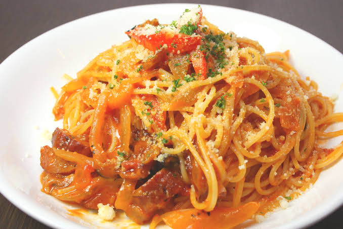
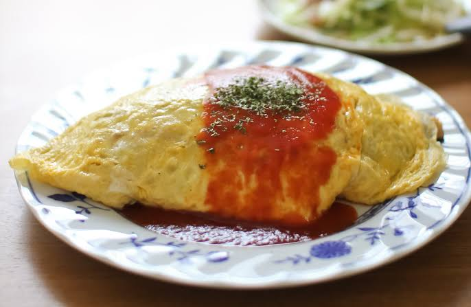

menu

旨味たっぷりのトマトソースが絡んだパスタを、贅沢に山盛りに仕上げました。 ゴロゴロ入ったお肉と甘みのある玉ねぎ、鮮やかな赤パプリカに、 香り高い粉チーズとパセリをたっぷりトッピング。見た目も味わいも満足感あふれる自慢の一皿です。
優しい甘みと出汁の旨味が広がる、ボリューム満点の厚焼き玉子をふわふわの食パンで贅沢に挟みました。 口いっぱいに広がる玉子の優しい味わいは、モーニングにもランチにもぴったり。 彩り豊かな自家製ピクルスと一緒にお楽しみください。

優しい口当たりの卵に、旨味たっぷりの特製トマトソースを贅沢にかけました。 しっとりジューシーなチキンライスと、まろやかな卵、爽やかなソースの酸味が絶妙に絡み合う自慢のランチメニューです。
厳選したコーヒー豆をじっくり焙煎し、豆本来の甘みと豊かな香りを最大限に引き出しました。 雑味のないクリアな味わいと、口いっぱいに広がる奥深い余韻をお楽しみいただけます。
深煎りエスプレッソのほろ苦さに、きめ細かく泡立てたふわふわのミルクをたっぷりと重ねました。 仕上げに振りかけたパウダーの甘い香りがアクセント。口当たりなめらかで、心までホッと温まる贅沢な一杯です。